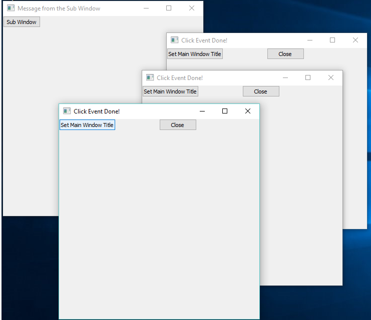

Objects Library for RingQt Application¶
In this chapter we will learn about the objects library for RingQt applications.
Ring comes with the Objects library for RingQt applications. Instead of using global variables for windows objects and connecting events to objects using the object name, the Objects Library will manage the GUI objects and will provide a more natural API to quickly create one or many windows from the same class and the library provide a way to quickly set methods to be executed when an event is fired. Also the library provide a natural interface to quickly use the parent or the caller windows from the child or sub windows.
The Objects Library is designed to be used with the MVC Design Pattern.
The Objects Library is merged in RingQt so you can use it directly when you use RingQt
Library Usage¶
- Use the Open_Window(cWindowControllerClassName) function to open new Windows
- Create at least Two Classes for each window, The Controller Class and the View Class
- Create each controller class from the WindowsControllerParent Class
- Create each view class from the WindowsViewParent Class
- Use the Last_Window() function to get the object of the last window created (The Controller object).
- When you call a sub window, use the SetParentObject() method and pass the self object.
- In the View Class, To determine the event method use the Method(cMethodName) function.
- The Method(cMethodName) function determine the method in the controller class that will be executed.
- Each controller class contains by default the CloseAction() method that you can call to close the window.
- You don’t need to call the Show() Method for each window, When you use Open_Window() It will be called.
- In the view class, Define the GUI window object as an attribute called win.
- You can use Open_WindowNoShow() to avoid displaying the window.
- You can use Open_WindowAndLink() to quickly get methods to access the windows.
Example¶
In the next example we will create two types of windows.
- Main Window contains a button. When the user click on the button a sub window will be opened.
- The User Can click on the button many times to open many sub windows.
- Each Sub Window contains Two buttons.
- The first button in the sub window change the Main and the Sub Windows Titles.
- The second button in the sub window close the Sub Window.
load "guilib.ring"
new qApp {
open_window( :MainWindowController )
exec()
}
class MainWindowController from WindowsControllerParent
oView = new MainWindowView
func SubWindowAction
Open_window( :SubWindowController )
Last_Window().SetParentObject(self)
class MainWindowView from WindowsViewParent
win = new qWidget() {
SetWindowTitle("Main Window")
btnSub = new qPushButton(win) {
setText("Sub Window")
setClickEvent( Method( :SubWindowAction ) )
}
resize(400,400)
}
class SubWindowController from WindowsControllerParent
oView = new SubWindowView
func SetMainWindowTitleAction
Parent().oView.win.SetWindowTitle("Message from the Sub Window")
oView.win.SetWindowTitle("Click Event Done!")
class SubWindowView from WindowsViewParent
win = new qWidget() {
SetWindowTitle("Sub Window")
btnMsg = new qPushButton(win) {
setText("Set Main Window Title")
setClickEvent( Method( :SetMainWindowTitleAction ) )
}
btnClose = new qPushButton(win) {
Move(200,0)
setText("Close")
setClickEvent( Method( :CloseAction ) )
}
resize(400,400)
}
The next screen shot after creating three sub windows.

The next screen shot after clicking on the button in each sub window.
Open_WindowAndLink() Function¶
We can use the Open_WindowAndLink() function to connect between the application windows, pass messages (call methods) between the objects.
This function uses Meta-programming to define dynamic methods in the Caller Class to use the dynamic objects of other windows that we create.
Example : (Uses the Form Designer)
First Window
- https://github.com/ring-lang/ring/blob/master/applications/formdesigner/tests/twowindowspart5/firstwindowView.ring
- https://github.com/ring-lang/ring/blob/master/applications/formdesigner/tests/twowindowspart5/firstwindowController.ring
Second Window
- https://github.com/ring-lang/ring/blob/master/applications/formdesigner/tests/twowindowspart5/secondwindowView.ring
- https://github.com/ring-lang/ring/blob/master/applications/formdesigner/tests/twowindowspart5/secondwindowController.ring
In the next code for example (from FirstWindowController.ring)
The Open_WindowAndLink() will create an object from the SecondWindowController Class
Then will add the Method : SecondWindow(), IsSecondWindow() Methods to the FirstWindowController Class
Also will add the Method : FirstWindow(), IsFirstWindow() Methods to the SecondWindowController Class
So the SendMessage() method in FirstWindowController class can use the SecondWindow() method to access the object.
This is more simple than using Last_Window(), Parent() and SetParentObject() methods.
class firstwindowController from windowsControllerParent
oView = new firstwindowView
func OpenSecondWindow
Open_WindowAndLink(:SecondWindowController,self)
func SendMessage
if IsSecondWindow()
SecondWindow().setMessage("Message from the first window")
ok
func setMessage cMessage
oView.Label1.setText(cMessage)
Open_WindowInPackages() Function¶
The Open_WindowInPackages() function is the same as Open_Window() but takes an extra list that determine the packages to import before opening the window.
Syntax:
Open_WindowInPackages(cClassName,aPackagesList)
Example:
The next example from the Form Designer source code, Open the Window Flags window using the open_windowInPackages() function.
We determine the class name “WindowFlagsController” and the packages name.
The Window Flags window uses the FormDesigner and System.GUI packages.
open_windowInPackages(:WindowFlagsController,[
"formdesigner",
"System.GUI"
])
Objects Library Source Code¶
The library source code is very simple, You can check the source code files